Product Design
Mentorship Engagement
Enhancing the mentorship experience for students.
My Role
- Product Designer
Timeline
- Jul. 2019 - Sept. 2019
Team
- Engineers, Product Manager, User Researcher
Responsibilities
- Product Strategy, UX/UI, User Research
Background
In May 2019, Udacity launched a new and improved mentorship service for students. Once a student enrolls, they are automatically matched to a mentor during the welcome flow based on interests and time zone.
To continue to enhance the mentorship experience, it was determined as one of the main priorities in H2 2019. Today, only 40% of students send more than five messages per month to their mentor.
Objective
Assumption 1: exposing mentorship in the classroom will increase engagement.
Assumption 2: students who interact more with their mentor are more likely to complete their Nanodegree program.
The goal is to increase the percent of students who interact with their mentor five or more times a month to 50%. Currently, the only point of engagement for students and mentors is through Student Hub, the online student community.
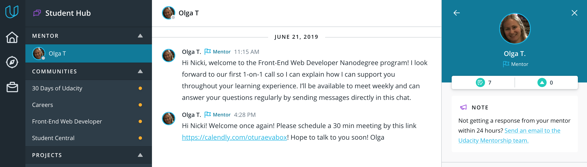User Research
A lot of research was done in order to get a better understanding of the student-mentor relationship. I worked with the user researcher to create a questionnaire of in-depth questions asking mentors and students to explain their experience with mentorship so far.
The main takeaway was that students were frustrated when they didn't know their mentor was online while they were in the classroom and therefore often missed important communication during that time.
User Flows
To get a better sense of the student-mentor relationship, I created a flow of where the student and mentor would engage.
Welcome flow
First point of contact for the student-mentor relationship happens during the welcome flow. Once the mentor is notified of being assigned a new student, they will immediately send out an automated message welcoming the student to the program.
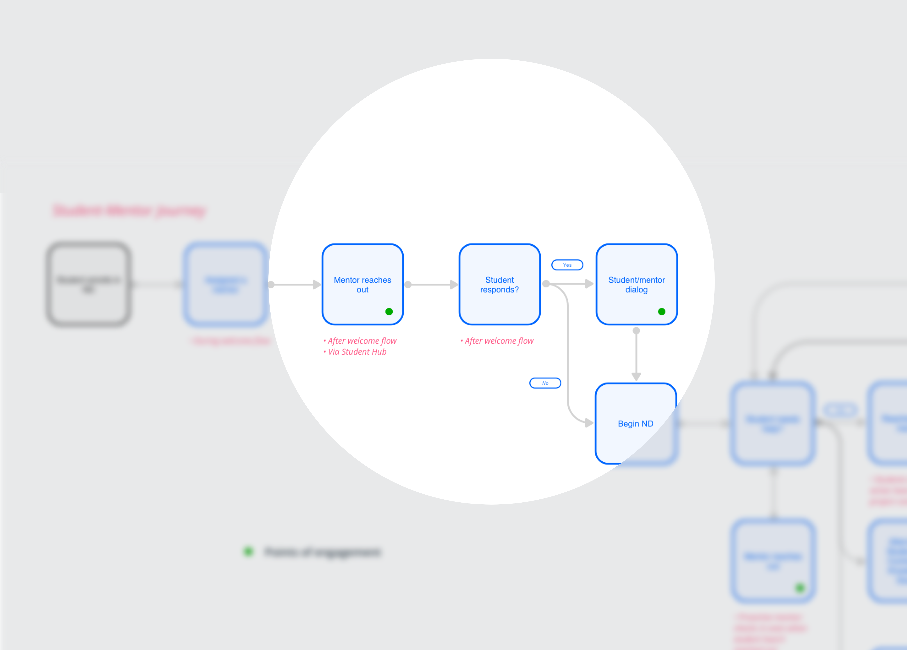Proactive mentor
Another point of contact is when the mentor wants to check in on the student unprompted. Many mentors like to be proactive in building their relationship with the student and often check in on them without the student reaching out first.
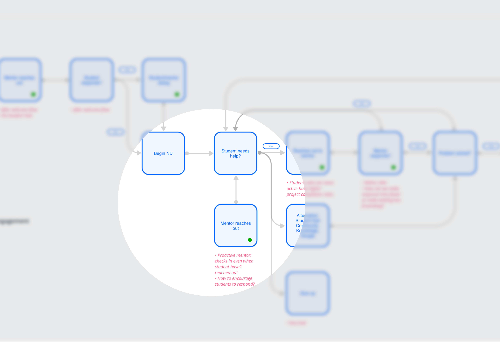Student needs help
The most common point of contact is when the student reaches out to the mentor when they are stuck on a problem or project.
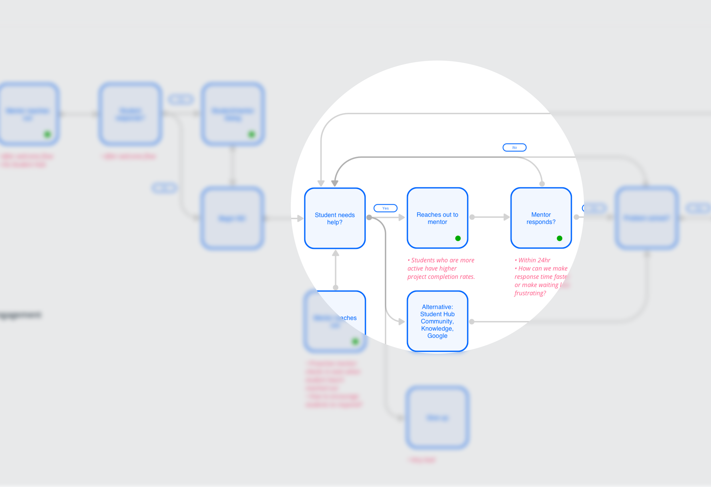Brainstorm
I began by creating a list of ideas that the team and I brainstormed during the kickoff meeting. A lot of great ideas were generated and I wanted to sort through them to find out which ones tackle our immediate goal.
I created a 2x2 impact chart to see which ideas to work through first. Working with the team, we decided to pursue notifications in the classroom first.
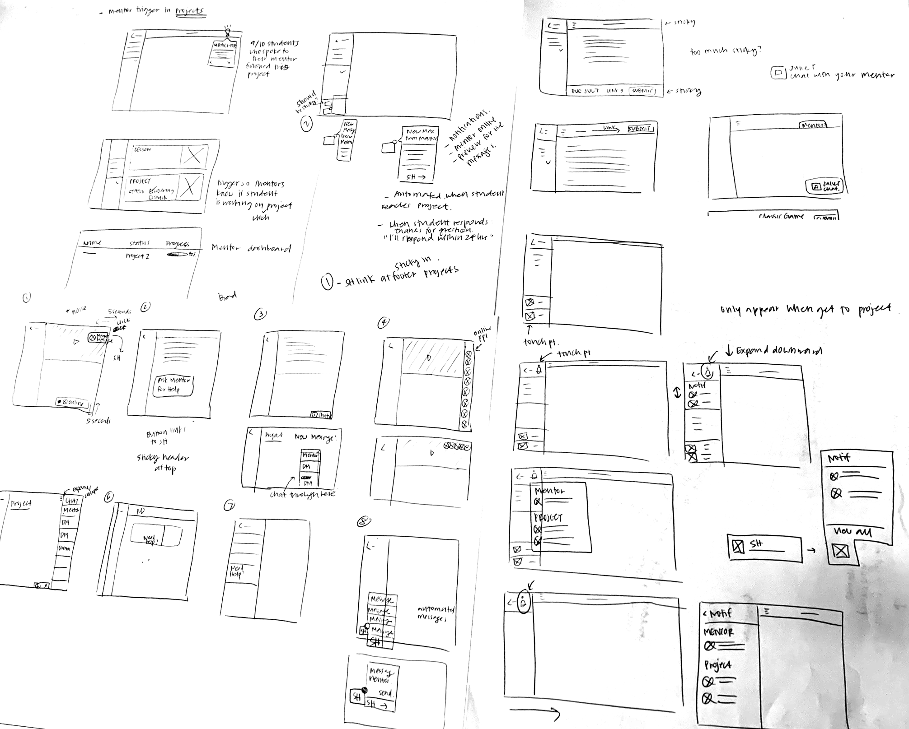Explorations
Notification style and location
I experimented with the location of where the notification should appear. In addition, I wanted to test how much copy should appear on each notification and whether or not there should be a "quick reply" interaction.
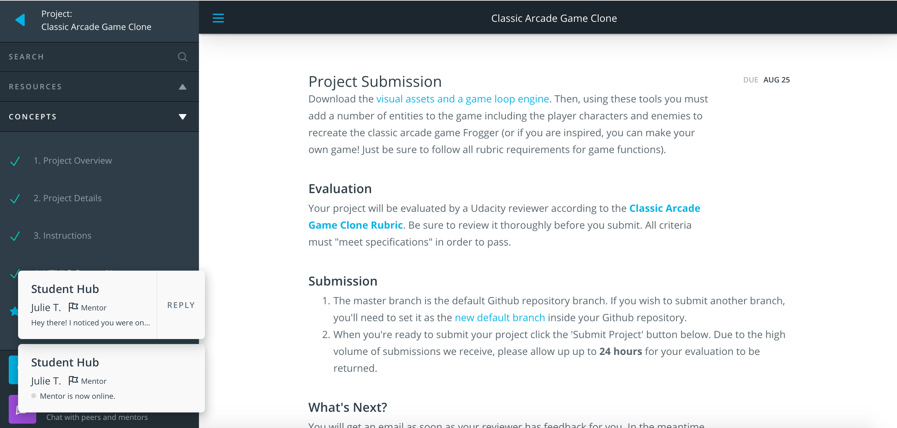 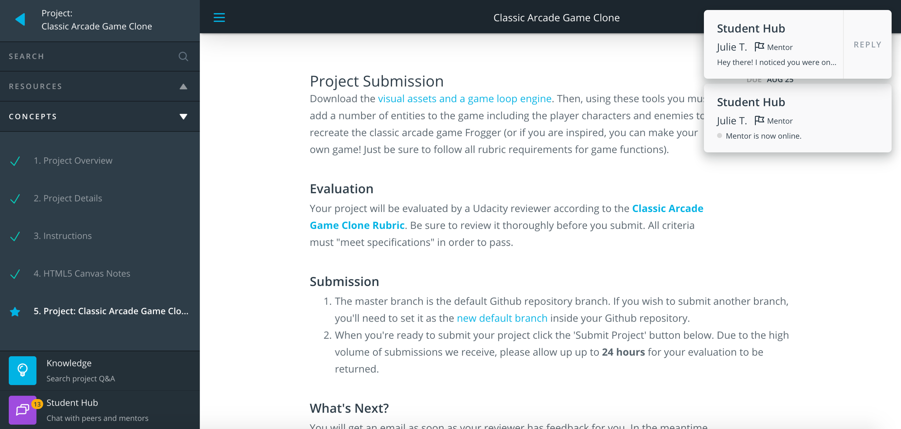Message preview
I also had an idea to create a message preview center in the classroom where students can get a quick overview of their mentors activity happening in Student Hub. I explored different layouts and interactions.
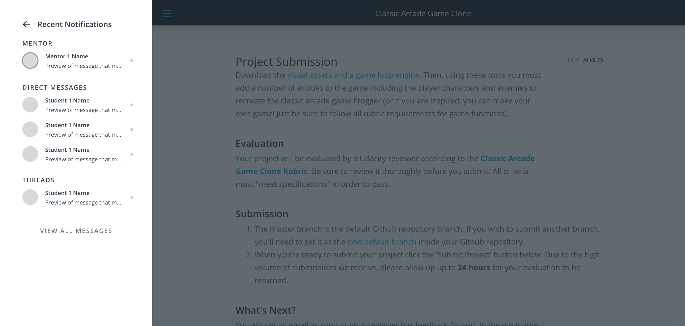 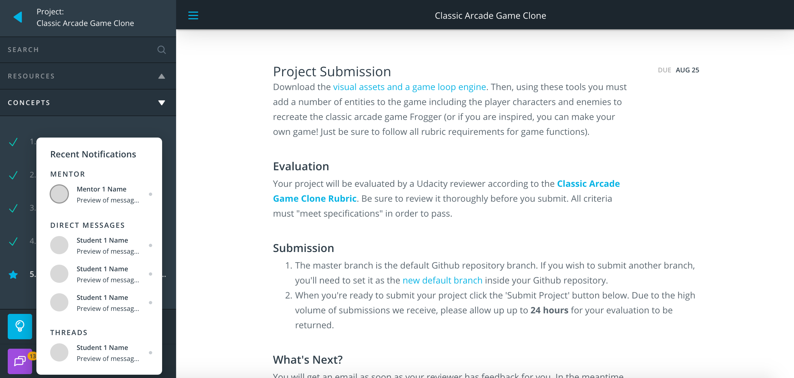 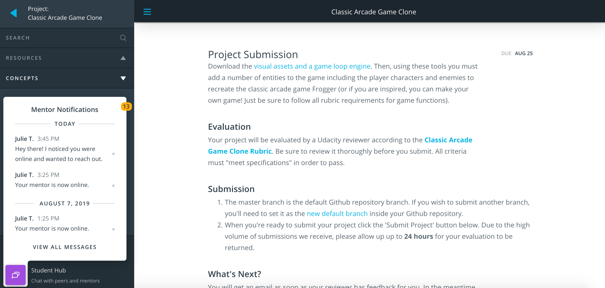User Testing
Working with the user researcher, we were able to do usability testing on five students to get their insights on this new feature. I also wanted to show students this feature in different context to get their thoughts if it would be too intrusive to their learning.
Insights
1. Students believed they would not use the quick reply feature
2. They liked the hover message preview
3. They found the mentor online notification to be extremely useful
4. They would like an option to "turn off" notifications
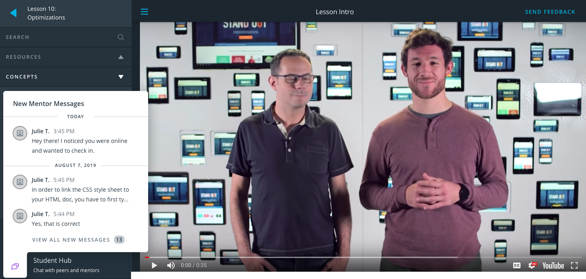 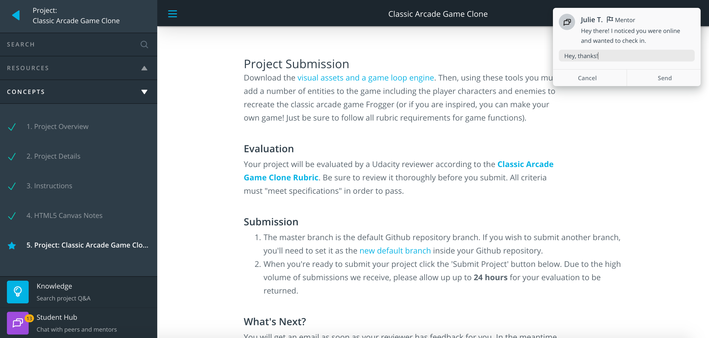Prototype
Using the results of the user testing sessions, I was able to finalize the designs.
 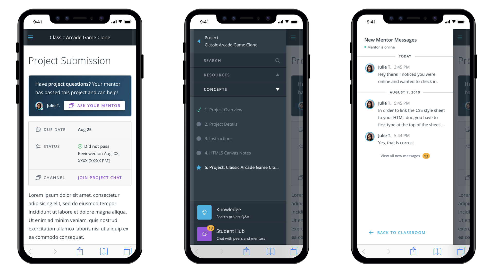
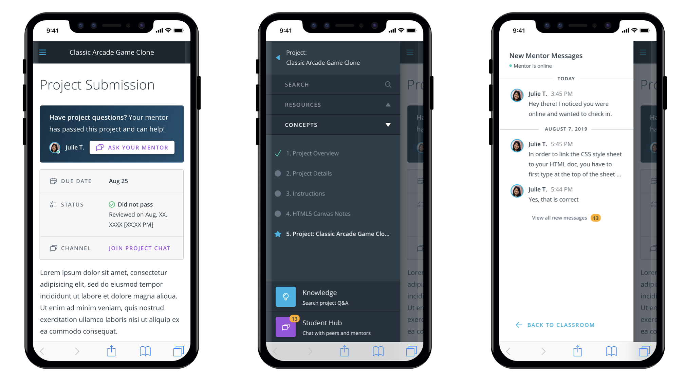
Metrics
To measure the success of this feature, I want to see if the number of messages exchanged monthly between students and mentors increases. In addition, I would like to check in with students to ask if this feature has helped with their frustration of often missing important messages from their mentor.
Reflection
Being able to conduct user testing sessions was really important and insightful in order to build out this feature. It gave me a chance to really dive in with the student and truly understand where their frustrations are coming from. I was also able to gain insight into behaviors that I would not have thought of.
Next Steps
I would like to continue iterating upon this feature by building out more sophisticated snooze features and adding in different types of notifications that students would like to see (such as payment reminders, project due dates, etc.)